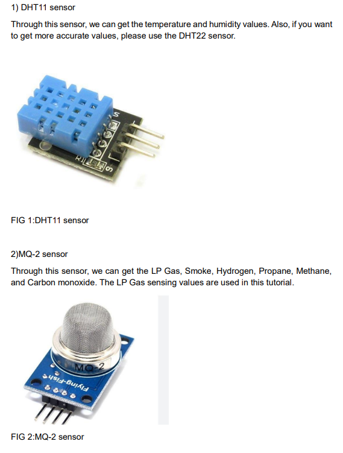
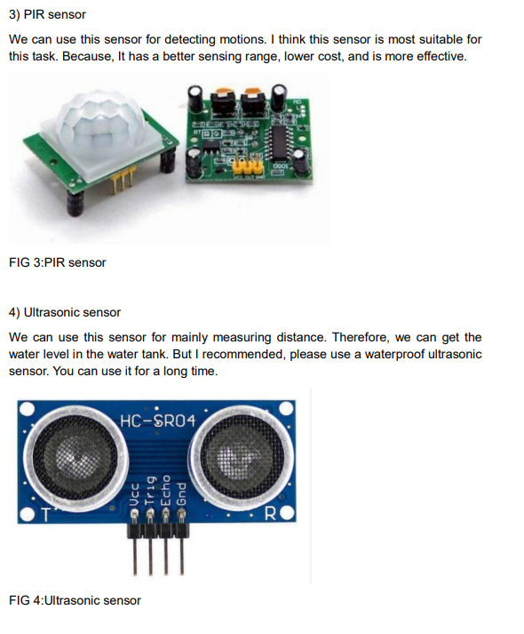
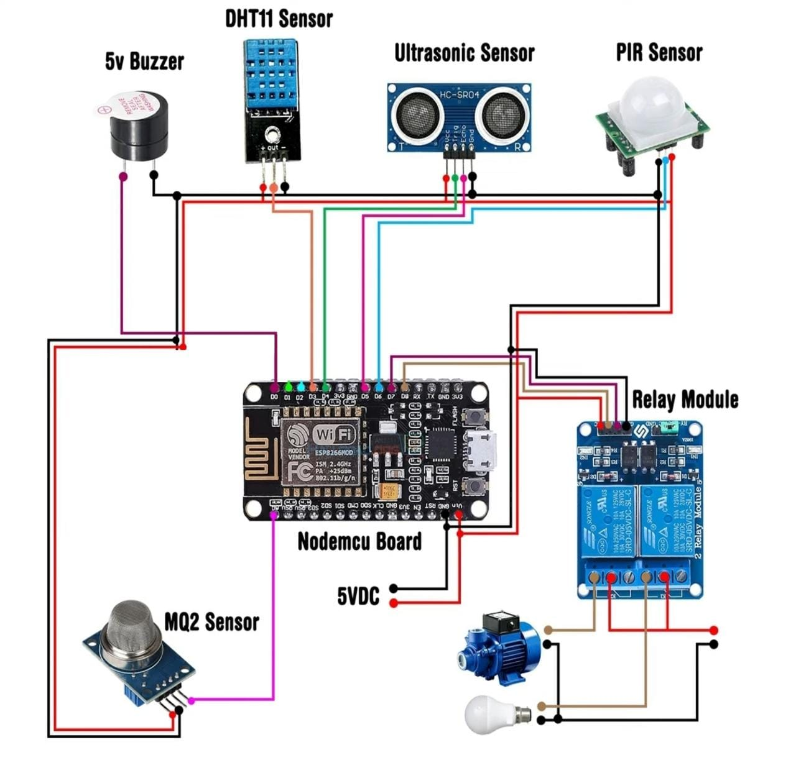
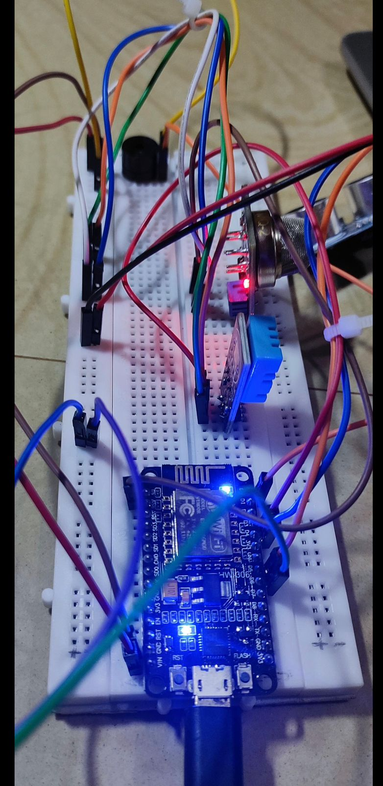
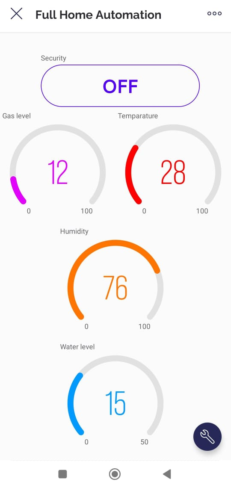

In the era of rapid technological advancements, the integration of home automation
systems has redefined modern living by offering unparalleled convenience, energy
efficiency, and enhanced security. This project presents a comprehensive Full Home
Automation System, utilizing sensors such as DHT11 for temperature and humidity
monitoring, PIR sensor for security, MQ2 sensor for gas level monitoring, and
Ultrasonic sensor for water level monitoring. The system is powered by the
NodeMCU ESP8266 and seamlessly connects to the updated Blynk app, providing
users with an intuitive interface for remote monitoring and control.
COMPONENTS



Circuit Diagram

Temperature and Humidity Monitoring (DHT11 Sensor):
The DHT11 sensor is employed to measure temperature and humidity values. The
readings are periodically sent to the Blynk app and displayed on both the LCD screen
and the Blynk interface.
Gas Level Monitoring (MQ-2 Sensor):
The MQ-2 sensor detects various gases and smoke. Gas levels are translated into
percentage values and sent to the Blynk app for monitoring. A buzzer is activated in
case of a gas leak.
Security System (PIR Sensor):
The PIR sensor is used for motion detection. When motion is detected, a notification
is sent to the Blynk app, and a buzzer is activated if the security feature is enabled.
Water Level Monitoring (Ultrasonic Sensor):
The ultrasonic sensor measures the distance to determine the water level in a tank.
Water level data is sent to the Blynk app, providing real-time information about the
water storage.
Blynk App Setup:
The Blynk app is configured with a customized dashboard, displaying datastreams for
security, gas value, temperature, humidity, water level, relay status, etc. Widgets such
as buttons and gauges are added to the dashboard and linked to specific datastreams.
Program Implementation (Arduino Code):
Arduino code is developed to read sensor values, control relays, and communicate
with the Blynk app. The code includes functions for each sensor, Blynk integration,
and timer-based sensor readings.
System Integration:
All components are connected on a breadboard as per the circuit diagram provided.
The Nodemcu board is programmed with the Arduino code, and the Blynk app is set
up with the corresponding dashboard.
Final Assembly


Prepared by
Janvi 4NM21IS058
Khushi S Shetty 4NM21IS065
M Vasudha 4NM21IS072
Under the Guidance of
Dr. Jason Elroy Martis
Associate Professor
Information Science Department